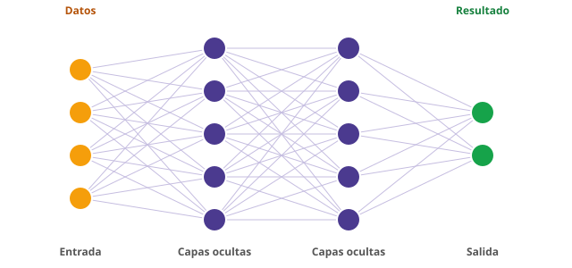

Módulo 3: Historia de la IA (II): expertos, ajedrez y deep learning
Sistemas expertos, la victoria sobre Kasparov y la revolución del aprendizaje profundo.
En los 80 la IA volvió con sistemas expertos, ganó al campeón mundial de ajedrez en 1997 y, desde 2012, el aprendizaje profundo con redes neuronales muy grandes y muchos datos hizo que la IA empezara a funcionar de verdad.
Del ajedrez a las redes neuronales (1980-2016)
1. Los años 80: sistemas expertos
Tras el primer invierno, la IA volvió con otra idea: en lugar de intentar crear una inteligencia general, construir programas expertos en un tema, con las reglas de especialistas humanos. Un sistema experto llamado XCON ayudaba a configurar ordenadores en la empresa DEC y ahorraba millones. Otro, MYCIN, proponía diagnósticos de infecciones.
Funcionaban, pero eran caros de mantener: cada regla había que escribirla a mano y los sistemas fallaban si les preguntabas algo fuera de su tema. A finales de los 80 y principios de los 90 llegó el segundo invierno de la IA.
2. Aprender de los datos: las redes neuronales vuelven
En 1986, David Rumelhart, Geoffrey Hinton y Ronald Williams popularizaron la retropropagación (backpropagation), una forma de entrenar redes neuronales con varias capas. Una red neuronal es un conjunto de «neuronas» artificiales organizadas en capas que ajustan sus conexiones al ver ejemplos.

3. 1997: Deep Blue gana a Kasparov
En mayo de 1997, el superordenador Deep Blue de IBM derrotó al campeón mundial de ajedrez, Garri Kaspárov, en un match a seis partidas. Fue un hito simbólico, pero Deep Blue no «aprendía»: calculaba millones de jugadas por segundo con reglas escritas por expertos.
4. 2011: Watson y los asistentes de voz
En 2011, Watson de IBM ganó el concurso de televisión Jeopardy! contra campeones humanos. Ese mismo año, Apple presentó Siri, y poco después llegaron Google Now, Alexa y Cortana: la IA empezaba a entrar en los móviles y en las casas.
5. 2012: la explosión del aprendizaje profundo
Tres cosas coincidieron: muchísimos datos (internet), mucha potencia de cálculo (las tarjetas gráficas o GPU) y mejores técnicas. En 2012, una red llamada AlexNet (Krizhevsky, Sutskever y Hinton) ganó con ventaja el concurso de reconocimiento de imágenes ImageNet. A partir de ahí, el aprendizaje profundo (deep learning) dominó el campo: reconocimiento de voz, de imágenes y traducción dieron un salto enorme.
6. 2016: AlphaGo
El juego de mesa Go es mucho más complejo que el ajedrez. En marzo de 2016, AlphaGo, de DeepMind (Google), venció 4-1 al campeón Lee Sedol. Lo sorprendente fue que aprendió jugando millones de partidas contra sí mismo y encontró jugadas que ningún humano había pensado.
| Año | Hito | Por qué importa |
|---|---|---|
| 1980s | Sistemas expertos | La IA llega a las empresas, pero es cara y frágil |
| 1986 | Retropropagación | Se pueden entrenar redes con varias capas |
| 1997 | Deep Blue vence a Kasparov | Una máquina gana al campeón de ajedrez (con cálculo, no con aprendizaje) |
| 2011 | Watson y Siri | La IA llega al gran público |
| 2012 | AlexNet | El aprendizaje profundo funciona de verdad |
| 2016 | AlphaGo | Una IA aprende sola a un nivel superior al humano |
⚠️ Errores frecuentes y cómo corregirlos
| Lo que pasa | Por qué | Cómo corregirlo |
|---|---|---|
| Pensar que Deep Blue «aprendía» | Se le suele comparar con la IA de hoy | Deep Blue calculaba muchas jugadas con reglas de expertos; AlphaGo sí aprendió por sí misma |
| Creer que el deep learning es nuevo | Parece surgido en 2012 | Sus ideas son de los años 40 a 80; lo nuevo es tener datos y potencia para entrenarlas |